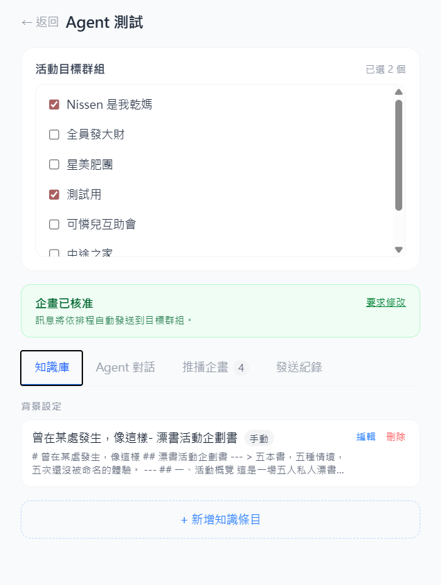

用自然語言規劃活動訊息，AI 幫你寫好、排好、推出去。
AI 驅動的活動管理與訊息推播平台。透過 7 階段 Harness Pipeline， 讓每一次 LLM 呼叫都可觀測、可恢復，並透過 LINE Bot 自動推播給對的群組。

不需要技術背景，只要會打字，就能讓 AI 幫你規劃好所有推播時間與內容。
要創造這種「安靜且有文學感」的氛圍，關鍵在於「留白」與「隱喻」。不要把這當成一個「活動」，而是一場「默契的約定」。以下我為你設計了從 4/27 到 4/30 (活動前一天) 的引導邏輯與文案範例。這些內容請用一種「隨手分享」的口吻發在群組裡。
你覺得這個節奏符合你們的朋友圈嗎？
確認沒問題的話，請讓我知道。
讓活動主辦方專注於活動本身，僅需審查 AI 規劃的不同群組的客製推播文案、推播時機
7 階段有狀態執行器。每次執行都建立一筆 harnessRun，
記錄當前 stage、LLM 呼叫次數與狀態，讓 debug 不靠猜。
ContextEnvelopellm_rate_limit_errorparse_output 階段事後推斷 intent，決定後續行為。每種 intent 對應不同的副作用。
產生訊息排程，寫入 Firestore 並準備推播至目標 LINE 群組。
從對話中萃取結構化知識，更新群組知識庫，供下次 context 載入使用。
回答使用者的問題，純文字回覆，不觸發任何 Firestore 寫入。
以下是程式碼層級已確認的限制，不是警告，是下個版本的優先工單。
validateExtractedKnowledge() 已實作且有測試，但 orchestrator 只 import validateMessagePlan。knowledge 寫入前僅做 type 白名單過濾，不檢查 title / content 是否為空。
buildSystemPrompt() 只有一個，三種 intent 共用同一組 system prompt。intent 在 parse_output 事後推斷，而非事前分流，prompt 品質受限。
persistEffects() 分批 batch.commit()，若第一批成功、第二批失敗，資料部分寫入，目前無補償邏輯，僅靠 runId 事後追溯。
分為技術強化與功能擴充兩條軸線，持續迭代。
validateExtractedKnowledge() 接進 orchestrator 的 validate_output stagecontext_load_error / llm_rate_limit_error / persistence_error），每類有明確 retry 策略persist_effects 多批寫入加補償邏輯，依 runId 重試未完成的批次plan_messages / extract_knowledge / general_chat 各自的 system prompt）ContextEnvelope 生成器替換為 retrieval-augmented 版本，召回相關知識而非全量載入pause_before_persist、pause_after_validate）對應 LangGraph human-in-the-loop 中斷點全端 TypeScript，GCP 原生部署。